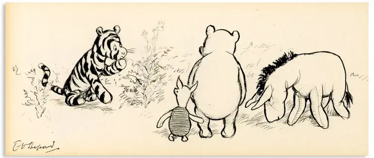
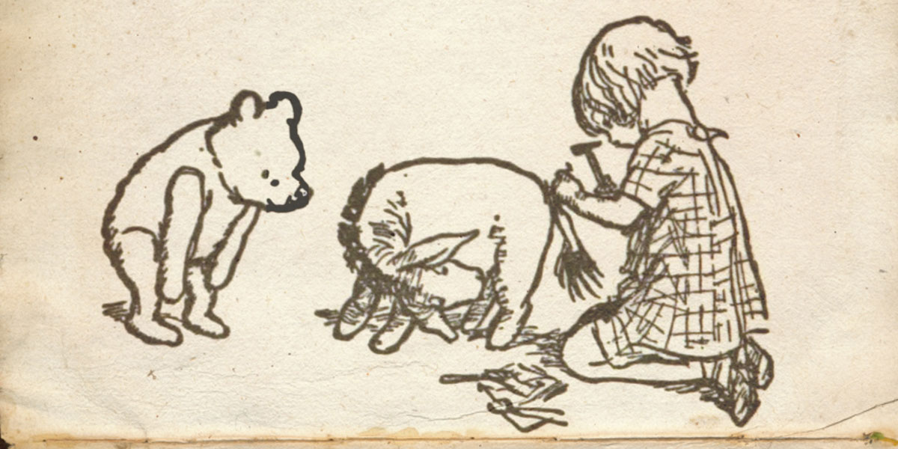

☀️
Today
✦
Habits
◈
Money
🍽
Food
◉
Guide
In Full Bloom
♪
lofi
--:--
API Settings
Paste one of the following:
sk-ant-…
— Anthropic API key
sk-…
— OpenAI API key
https://…
— your own Cloudflare Worker
Leave empty to use the shared Worker.
Key or Worker URL
Session usage
Save
Cancel
Reset to shared Worker